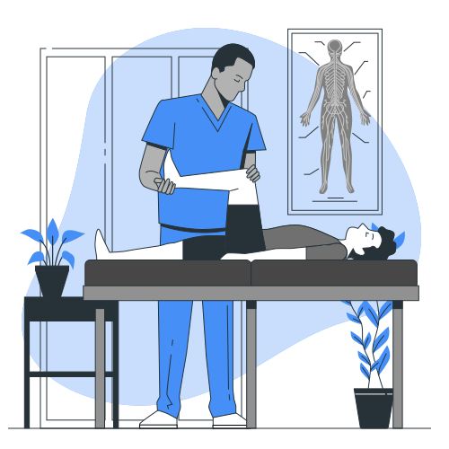
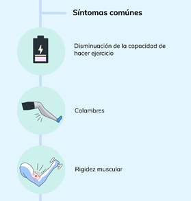
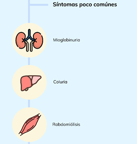

Historia

En 1951 Brian McArdle describió a un hombre de 30 años que experimentó dolor y rigidez después del ejercicio. McArdle notó que los músculos del hombre estaban eléctricamente silenciosos, a diferencia de los calambres comunes, y que su nivel de lactato venoso no aumentó después del ejercicio isquémico.
Se dio cuenta de que este era el mismo fenómeno que ocurre cuando el músculo es envenenado por yodoacetato, una sustancia que bloquea la descomposición del glucógeno en glucosa, y así la enfermedad de McArdle, o enfermedad de almacenamiento de glucógeno tipo 5, entró en la literatura.
Síntomas


<